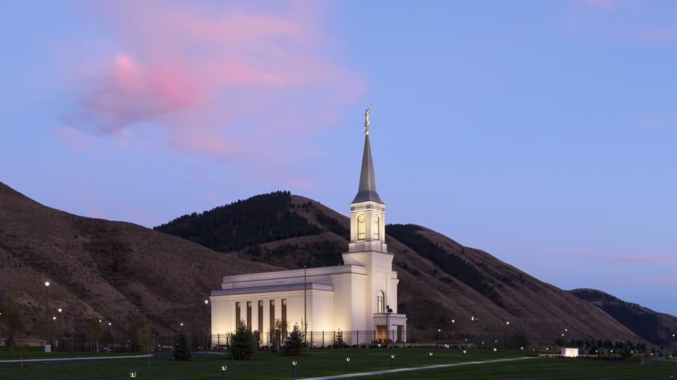

Star Valley Wyoming Temple
 The Star Valley Wyoming temple stands on a gentle rise overlooking Highway 89, just south of the community of Afton near the mouth of Hale Canyon. The classical design of the temple echoes architectural elements found in the historic Star Valley Tabernacle, located just a mile north of the temple. The pair of buildings represents the spiritual heart and center of the Latter-day Saint community in Star Valley.The Star Valley Wyoming Temple was prophesied by Elder Moses Thatcher of the Quorum of the Twelve. Thatcher first came to the valley in the late 1870s, looking for a suitable location where colonizing Latter-day Saints could settle. Looking over the beautiful valley, he declared, "I hereby name this valley Star Valley because it is the star of all valleys." He later returned with Elder Charles C. Rich, a senior apostle, to dedicate the valley for Mormon settlement.
The Church has a long history in Star Valley with the first Mormons of record arriving from England in 1858 to labor on the Lander Cutoff. By 1870, Church cattle were pastured in the valley, and in 1879, a directive was issued to colonize the Salt River Valley—renamed Star Valley the next year. Members were first organized into a branch of the Bear Lake Stake. In 1892, the Star Valley Stake was organized with 7 wards. The 140-foot Star Valley Tabernacle, which still stands in Afton, was dedicated on August 15, 1909, by President Joseph F. Smith. There are now two stakes of the Church in Star Valley: the Afton Wyoming Stake and the Thayne Wyoming Stake.